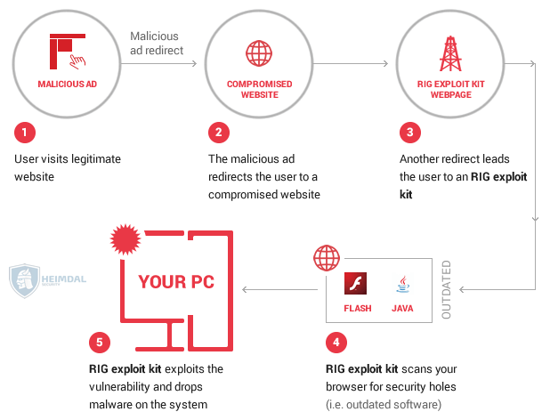
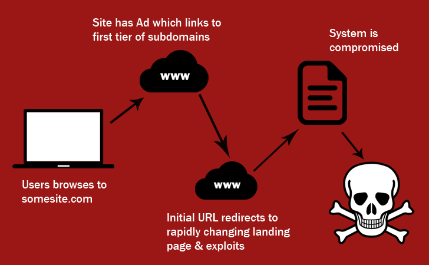
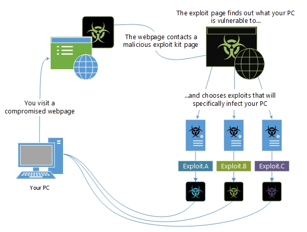

Exploit kits have been frequently used by cybercriminals over the last couple of years to infect devices with malware and cause damage - be it holding data for ransom or stealing the data for profit. Exploit kit use is on the rise again as indicated by the latest Infoblox DNS Threat Index report which shows a 75% increase in exploit kit related activity in Q3 2015, compared to the same quarter in 2014.
There are several reasons exploit kits can be a dangerous cyber threat in recent times. Here are the top five:
Using exploit kits requires minimal technical expertise.
They target security holes in popular software.
They are best at exploiting zero-day vulnerabilities.
It is easy to lure victims.
There are many of them.
History
Some of the first exploit kits were WebAttacker and MPack, both created in 2006. They were sold on black markets, enabling attackers to use exploits without advanced knowledge of computer security. The Blackhole exploit kit was released in 2010, and could either be purchased outright, or rented for a fee. Malwarebytes stated that Blackhole was the primary method of delivering malware in 2012 and much of 2013. After the arrest of the authors in late 2013, use of the kit sharply declined. Neutrino was first detected in 2012, and was used in a number of ransomware campaigns. It exploited vulnerabilities in Adobe Reader, the Java Runtime Environment, and Adobe Flash. Following a joint-operation between Cisco Talos and GoDaddy to disrupt a Neutrino malvertising campaign, the authors stopped selling the kit, deciding to only provide support and updates to previous clients. Despite this, development of the kit continued, and new exploits were added. As of April 2017, Neutrino activity ceased. On June 15, 2017, F-Secure tweeted "R.I.P. Neutrino exploit kit. We'll miss you (not)." with a graph showing the complete decline of Neutrino detections. From 2017 onwards, the usage of exploit kits has dwindled. There are a number of factors which may have caused this, including arrests of cybercriminals, improvements in security making exploitation harder, and cybercriminals turning to other method of malware delivery, such as Microsoft Office macros and social engineering.

Exploitation Process
The general process of exploitation by an exploit kit is as follows:
- The victim navigates to a website infected by an exploit kit. Links to infected pages can be spread via spam, malvertising, or by compromising legitimate sites.
- The victim is redirected to the landing page of the exploit kit.
- The exploit kit determines which vulnerabilities are present, and which exploit to deploy against the target.
- The exploit is deployed. If successful, a payload of the attacker's choosing (i.e. malware) can then be deployed on the target.

Features
Exploit kits employ a variety of evasion techniques to avoid detection. Some of these techniques include obfuscating the code, and using fingerprinting to ensure malicious content is only delivered to likely targets.
Modern exploit kits include features such as web interfaces and statistics, tracking the number of visitors and victims.
